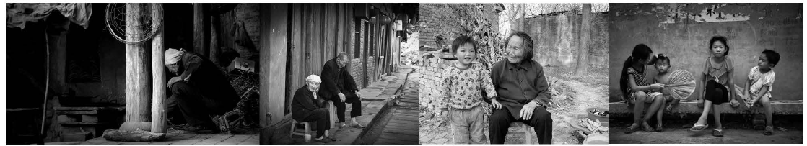
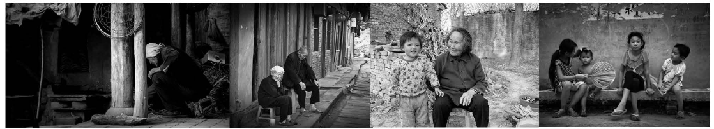
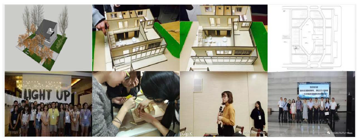
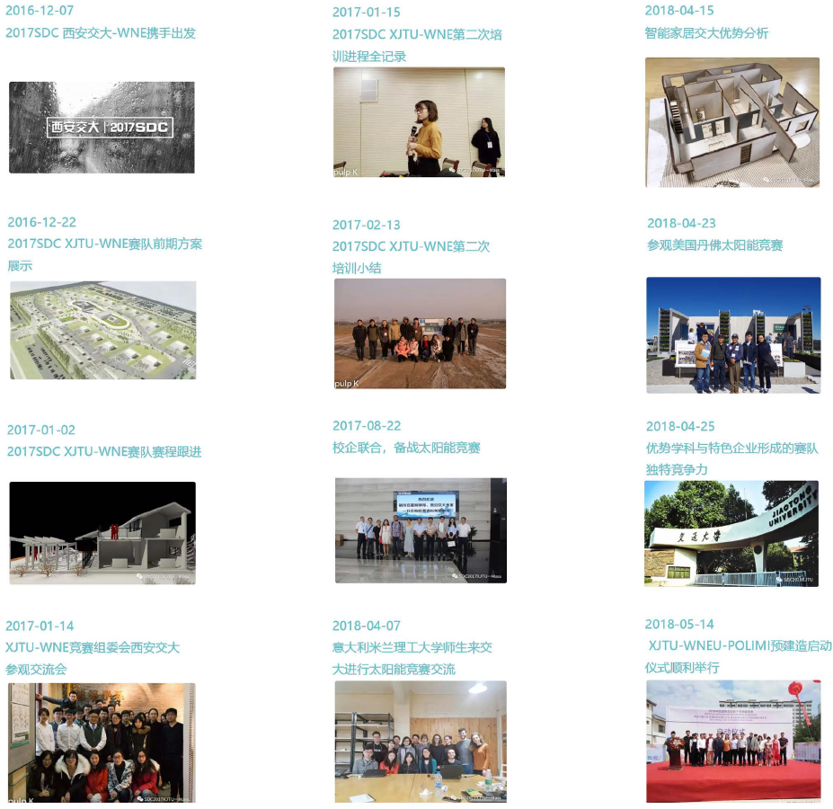
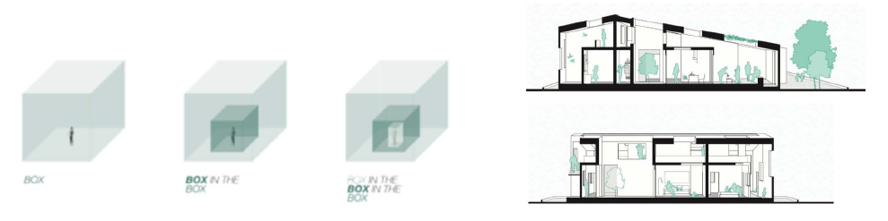
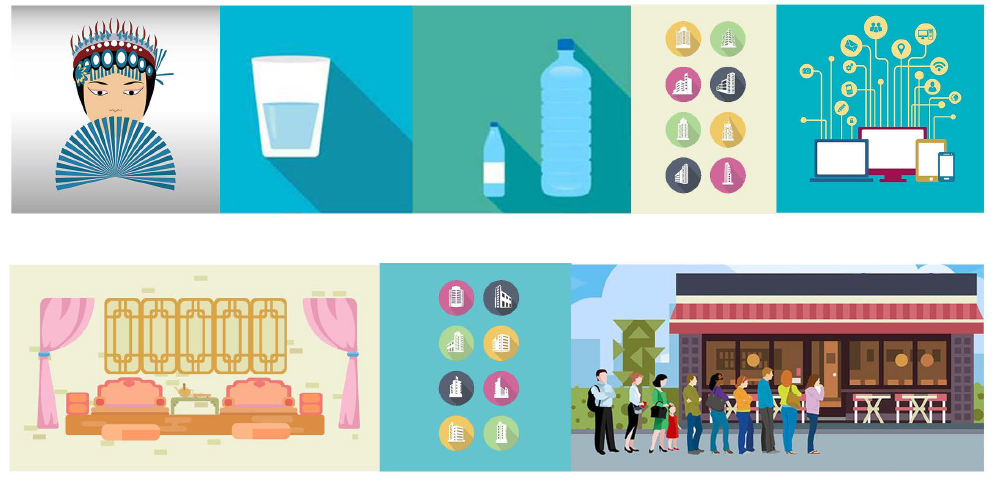
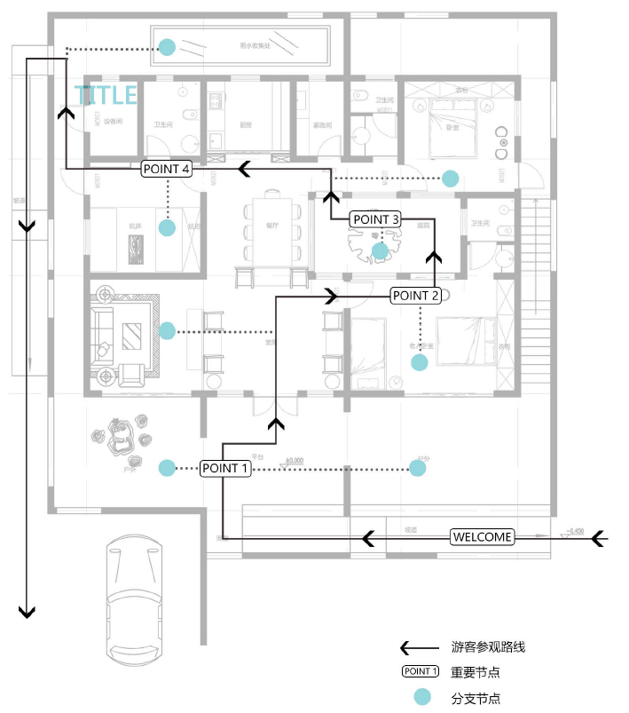
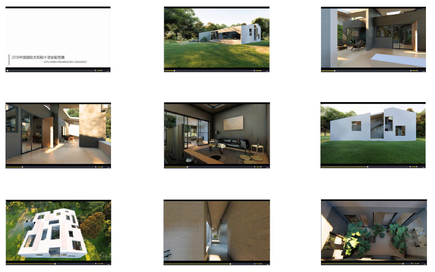
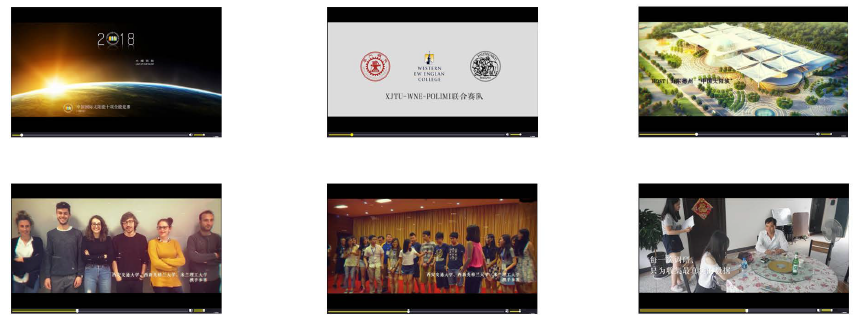

简介
中国乃至世界都在提倡和践行可持续发展观，建筑的可持续发展也是一个重要的部分。农村人口占中国总人口数的绝大部分，因此我们应该重点关注乡村住宅建筑。现如今，社会更苔演变迅速，农村民居已经跟不上时代发展的脚步，无法适应需求，空巢老人和留守儿童问题也是大家所关注的焦点，所以在农村家庭中人口的灵活变化对应空间满足的需求也是亟待解决的问题。为此，我们团队致力于为空巢家庭的老人和孩子打造一个舒适的生活空间，该建筑能够满足他们日常生活的各项需要。"归"家应运而生。
中国乃至世界都在提倡和践行可持续发展观，建筑的可持续发展也是一个重要的部分。农村人口占中国总人口数的绝大部分，因此我们应该重点关注乡村住宅建筑。现如今，社会更苔演变迅速，农村民居已经跟不上时代发展的脚步，无法适应需求，空巢老人和留守儿童问题也是大家所关注的焦点，所以在农村家庭中人口的灵活变化对应空间满足的需求也是亟待解决的问题。为此，我们团队致力于为空巢家庭的老人和孩子打造一个舒适的生活空间，该建筑能够满足他们日常生活的各项需要。"归"家应运而生。
1、网站:网站中的各项内窑全面的记录了我们团队自参赛以来的各项活动，以及方案进度等。
2、视频:视频生动的以声形色将我们队员的工作活动展现出来。
3、微信:手机浏览更为便捷，我们会在公众号定期更新比赛进程。
以上三种宣传方式，全方位的从各个方面介绍了我们自参加竞赛至今的所有活动。综合的介绍了我们的设计理念以及方案的创新点。
使用者的操作都是基于智能家居系统的。房子在全年使用过程中都不需要太多的维护。使用者可根据他们自己的使用来进行维护;即使在没有任何维护的情况下也能够顺利运行全年。智能家居系统会自动提醒使用者何时需要进行操作和维护，当有需要时，他们可以联系专业人员为他们进行维护，因为该方案正是为老年人家庭特别设计的。
在夏季的用电高峰时段，我们]预计房屋系统可以在3至5小时内以较高的水平运行。该系统在此期间不会发生任何功能问题，如果阳光充足，太阳能电池板能够收集足够的能量在需要的时间段来运行该系统。该系统在必要时能够运行比预期更长的时间。
我们通过这个竞赛，为老年人设计出适合于乡村居住的建筑。整个中国的城市化 率还不到百分之五十，所以该种建筑类型存在巨大的市场潜力;我们的设计通过各种 空间的变化来提高使用率;在南边设置了阳光房以达到冬暖夏凉的保温隔热效果，从 而节约能源，如果中国农村住宅都采用这种设计，那么将会减缓能源的消耗，实现可 持续发展。建筑的设计来源于传统的四合院，在此基础+ 上进行建筑空间的加减法，最后完成我们现在的设计。
团队网站
www.xjtu-wne.club/index.html是我们分享关于这个项目的重要信息的官方平台。我们 的网站有7个部分，包括事件概述、团队介绍、节目介绍、进度记录、模型展示、活动照片、 交流记录、视频展示，在这里访害可以轻松找到想到了解的信息。网站的平均每月访害数超 过了1000人。
在这个网站上，我们简要介绍了比赛的情况和我们的方案设计，使得参观者可以在5分钟 内对我们的计划有一个基本的了解。我们还发布了相关的视频来详细展示我们的方案，访害 可以对我们的设计有一个全面深刻的了解。进度记录的部分会让他们了解到重大事件、项目 进展以及最新消息。我们还用照片记录并展示了学生在比赛期间积极参与讨论、模型梅建、 参观企业等活动的情况。
社会媒体
为了有更大的影响力，我们选择了最知名的社交媒体来与他人联系。我们选择了中国最 主要的社交网络平台微信和facebook作为平台，让世界各地的人们都能与我们保持紧密的联 系。到目前为止，我们已经有了数百的关注者，数干的阅读量。
我们围绕项目创建了一个在线社区来与我们的合作伙伴和其他人建立联系。记录了比赛 的进程和一些参赛队员对本次竞赛的看法，并做了一些宣传，帮助人们更好地了解太阳能房 屋和一些节能技术。与此同时，他们也可以及时地和我们进行E动，共同推进项目的进展。
消息推送
自2017年1月起，每隔一段时间我们将我们的阶段工作制作成一份总结报告发布，目 的是向我们的合作伙伴和学术成员提供更精确的项目信息。E 由几个部分组成:最新消息， 赛程跟进，设计进度，图片记录，心得交流，重要活动等。通过这种方式，我们的读者可 以掌握我们的最新动态，跟上我们的脚步。
标牌与资料
我们的展板以蓝色调为主，整个版面设计十分简洁，主题突出。是将竞赛精神 与目前国家发展的大趋势紧密结合后所得到的具有标识性的标牌。展板中展现了三 个部分一一主题选取、赛队介绍、十项选能。整个logo则是结合了本次的设计想要 传达的思想一一归家，将这两个中文字与本次设计的房子外形相结合进行设计得到 我们最终的logo 。
宣传形式与意义
在本次设计中，我们的宣传资料以团扇 的形式发放，扇会印上本次竞赛中我们团队 的设计方案、设计理念和参观路线图，可以 十分明确也得传达我们所想要表达的概念。 同时，我们会在每把扇子的背面都配上一粒 时光胶囊，让过来参观的游客把想要对家人 或是爱人说的话写入其中，我们将会统一收 集储藏，十年后再还给这些人。从参与性角 度来说，每一个过来参观的人都可以参与， 并在参与的同时潜移默化的理解我们本次设 计想要传达的目标;从概念性来宣传，中国 传统文化便是落叶归根，通过时光胶囊的形 式强化了这种居家是归处的设计理念。
项目亮点
在本次竞赛中，我们有许多亮点。
1.整个设计思路在形如盒子的空间内形成庭院，而后在庭院"盒子"中再形成 房屋空间的小体积"盒子" ，最后，在房屋"盒子"中再生成花园"盒子" ，空间 不断升入，提供层次丰富，变化多样，充满趣昧的空间感受。
2.使用CL现浇复合混凝土剪力墙，这种材料具有较高的节能效果与保温系统， 并且比普通墙体具有更高的隔声性能，完全适用于绿色建筑和高性能建筑的外围护 墙隔声要求。
3.智能家真的运用从三点出发，第一点是舒适便捷，可以减少人力劳动，智能 营造氛围;第二，南是智能监控，可以把握电量流动，明确能耗分配;第三点是养老 关怀，专注老人生活，贴心安全养老。
4.设计理念是E助式养老，我们从中国文化教育所具有的H隔代教育"的特点 一一爷爷奶奶教孙子孙女的传统文化传承模式的"私塾" ，提取"爷爷家的小阁楼 ，的空间意象，将小孩子喜欢的有趣的空间和老年人空间结合，让老年人与小孩生 活在一起，既是H儿童天地"更是"养老乐园"。中国家庭模式并不是一成不变的 ，而传统养老模式在推广时会遇到很多问题。各种养老机梅虽然能够解决养老问题 ，但此模式存在社会成本巨大和资源严重的不足问题，绝大多数老年人习惯生活在 家庭里面不愿意去养老院，因为与并不熟知的人朝夕相处，这将增加他们的失落感 。我们希望针对老年人养老问题，提出在城市周边、郊区建造低层别墅区，为城市 老年人生活营造舒适、安静、便捷的绿色养老社区。通过对老年别墅社区与智能家 居结合，同时利用太阳能清洁能?原来提高住宅的晶质和舒适度。
游览路线设计
在此方案游览路线设计中，我们主要考虑了以下几点，使得游览过程更加丰富、高趣、吸引人:
1.在每一个游览的节点处设置一个彩色标识，上面可以印高二维码，节点介绍等信息，游客可以 通过手机扫描二维码的方式去浏览更丰富多样的节点介绍;
2 扫描二维码的同时，可以领取一个号码参与现场抽奖活动，提高游客们的积极性;
3.在游览过程中发放给游客团扇形式的宣传册，既起到了宣传作用，扇子的形式又使游客在炎热 的夏季得到一丝清凉，团扇上随扇附赠一颗时光胶囊，游客可以在指定点写上自己想说的话并投入收集 箱，使得游览过程变得更加高趣;
4.在参观过程中，可以设置一些E动体验项目，例如室内一些家具允许游客亲自感受，获得真实 的使用体验;或者可以设置一面墙的截面，让游客参观并了解我们CL墙的独特构造，扩展知识面，增 强游览的吸引力;又或者现场设置拍照区域，可免费以房子为背景拍摄照片，之后可以关注我们的公众 号查找自己的照片等;
5.在现场排队时，实时发放水、小型纪念品等小礼物，增加游客吸引力，改善游客排队体验;
6.我们将充分利用社交媒体、通信工具，通过视频、新闻、公众号推送等途径实时更新我们的比 赛进度与比赛新闻。
游客游览路线设计
在此次万案中，游览路线设计尽可能以较长并且没高E丰目交叉的路线，将房子内部串联起来I {吏 游客尽可能全面的参观房屋，对房子再一个全面的了解。
以一层游览路线为例，我们设计了四个重要参观节点，分别是外层户外平台、老人房间、中庭、 炕床房。每一个节点都代表了方案设计中的亮点，在游览过程中，每一个节点都会安排相应的参赛队 员对游客进行详细讲解。
对于人流较多拥墙的情 况而言我们采取两点考虑:
1.游览路线尽可能由折 ，游览参观通道宽度相对宽 敞，展览时为夏季，天气炎 热，在游览过程中我们会安 排参赛队员不间断的为游客 发放扇子形式的宣传册和水 ，帮助游客改善排队游览体 验。
2. 可采取分时段预约的 形式来控制每个时段的人流 量，每时段允许固定数量的 游客进入，采用提前预约排 号形式，减少游客排队等待 的时间。
我们将主要采用以上两 点万法解决人流拥挤问题， 控制参观数量。
我们将想要向观众传达的所有有关于建筑的内窑及理念，在视频中分为三个部分来表达。
第一部分
视频的第一部分作为方案展示视频，主要以向观众完整全面地展示整体建筑设 计方案为目的。视频以360度、由外到内的视角带领观众游走于建筑中的各个房间 ，使观众在还未亲临其中时就可对建筑产生身临其境的直观感受。同时在视频当中 我们向观众介绍了建筑的整体流线、功能布置等，便于观众更好地理解建筑基于" 养老"与"城市"两大议题相结合的设计理念。
第二部分
视频的第二部分作为赛队介绍视频，其中包含了对本次共同参赛的西安交通大 学、西新英格兰大学以及米兰理工大学联合赛队及成员的介绍。同时视频中记录了 两年以来赛队成员在准备工作中的所有合作与努力，也记录了设计理念与成果的一 步步发展与深化，并最终形成了可实施的成熟的方案。
第三部分
视频的第三部分作为实地展示视频，以完整记录及展示建造过程及建成后的建 筑为目的，将以时间点为线索记录建造的全部过程。视频将为观众展示我们在建造 过程中遇到的困难与思考，合作与坚持，努力与克服。由三个学校组成的联合赛队 将共同完成这一建筑。
电话：029-8266-8477 邮箱：xjtusdc2018@126.com 地址：陕西省西安市咸宁西路28号 / 1215 Wilbraham Road Springfield 邮编：710049 / MA01119